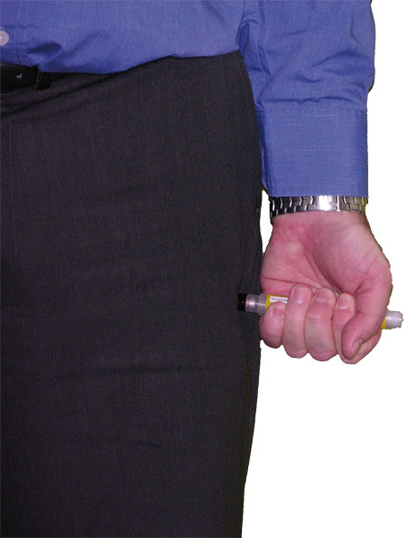

Anaphylaxis
Anaphylaxis
Anaphylaxis is the most severe form of an allergic reaction and has the potential to be life-threatening. Anaphylaxis occurs after exposure to an allergen such as food (eg. nuts), herbal remedies, latex, insect stings (eg. bees), or medicine, to which a person is already extremely sensitive.
It takes only 1 to 2 minutes for a mild allergic reaction to escalate to anaphylaxis. Some casualties may find that the symptoms they experience are always mild. For example, there may be a tingling or itching in the mouth and nothing more.
Anaphylaxis is a preventable and treatable event. The most important aspect of the management of casualties with life-threatening allergic reaction is avoidance of any known triggers such as:
 Food – most commonly nuts, sesame seeds, shellfish, cow milk, soy, egg and wheat.
Food – most commonly nuts, sesame seeds, shellfish, cow milk, soy, egg and wheat.
 Herbal remedies – such as Royal Jelly.
Herbal remedies – such as Royal Jelly.
 Insect stings – such as bees and wasps. The venom from these insects is different in each case, and therefore allergy to one does not increase the risk of reactions to another.
Insect stings – such as bees and wasps. The venom from these insects is different in each case, and therefore allergy to one does not increase the risk of reactions to another.
 Latex allergy – rare, but more common in some people frequently exposed to latex such as health care workers.
Latex allergy – rare, but more common in some people frequently exposed to latex such as health care workers.
 Medication – particularly antibiotics and sometimes x-ray contrast dyes.
Medication – particularly antibiotics and sometimes x-ray contrast dyes.
Casualties who have a history of anaphylaxis are often prescribed self-administered adrenaline using an EpiPen® or EpiPen® Jr. If this is the case assist the casualty to self-administer their EpiPen® adrenaline

Signs and Symptoms
The most noticeable signs and symptoms are:
 hives
hives
 swelling of the throat, lips, tongue, or around the eyes
swelling of the throat, lips, tongue, or around the eyes
 difficulty speaking, breathing or swallowing
difficulty speaking, breathing or swallowing
Other common signs and symptoms may include:
 metallic taste in the mouth
metallic taste in the mouth
 generalized warmth, flushing, itching, or redness of the skin
generalized warmth, flushing, itching, or redness of the skin
 chest discomfort
chest discomfort
 abdominal cramps, nausea, vomiting, or diarrhoea
abdominal cramps, nausea, vomiting, or diarrhoea
 increased heart rate
increased heart rate
 sudden feeling of dizziness or weakness
sudden feeling of dizziness or weakness
 anxiety or a sense of doom
anxiety or a sense of doom
 collapse
collapse
 loss of consciousness
loss of consciousness

Care and Treatment
 put on disposable gloves if available
put on disposable gloves if available
 call Triple Zero (000) for an ambulance
call Triple Zero (000) for an ambulance
 reassurance - stay with casualty
reassurance - stay with casualty
 if available assist with EpiPen® or EpiPen® Jr
if available assist with EpiPen® or EpiPen® Jr
 remove the EpiPen® or EpiPen® Jr from the packaging
remove the EpiPen® or EpiPen® Jr from the packaging
 grasp the unit, with the black tip pointing downward
grasp the unit, with the black tip pointing downward
 form a fist around the EpiPen® or EpiPen® Jr with black tip down
form a fist around the EpiPen® or EpiPen® Jr with black tip down
 pull off the gray cap
pull off the gray cap

 place black end against outer mid-thigh (with or without clothing)
place black end against outer mid-thigh (with or without clothing)
 push down hard until a click is heard or felt
push down hard until a click is heard or felt
 hold in place for 10 seconds
hold in place for 10 seconds
 remove EpiPen® or EpiPen® Jr and massage the injection area for 10 seconds
remove EpiPen® or EpiPen® Jr and massage the injection area for 10 seconds
 check black tip
check black tip
 if needle is exposed the dose has been administered
if needle is exposed the dose has been administered
 if not, hold black tip near outer thigh and repeat administration
if not, hold black tip near outer thigh and repeat administration
 bend the needle back against a hard surface
bend the needle back against a hard surface
 carefully put the unit (needle first) back into the carrying tube (without the gray activation cap)
carefully put the unit (needle first) back into the carrying tube (without the gray activation cap)
 recap the carrying tube
recap the carrying tube
 observe for relapse as severe symptoms sometimes recur after apparent recovery
observe for relapse as severe symptoms sometimes recur after apparent recovery
 further EpiPen® doses may be given if no response after 5 minutes
further EpiPen® doses may be given if no response after 5 minutes
 never put thumb, fingers, or hand over black tip
never put thumb, fingers, or hand over black tip
 DO NOT remove gray activation cap until ready to use
DO NOT remove gray activation cap until ready to use

EpiPen® Jr is generally prescribed for children aged 1-5 years.

Medical observation in hospital for at least 4 hours is recommended after anaphylaxis.
Useful Resource
Australasian Society of Allergy and Clinical Immunology (ASCIA)
http://www.allergy.org.au